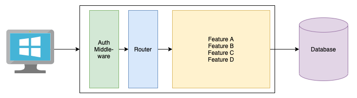
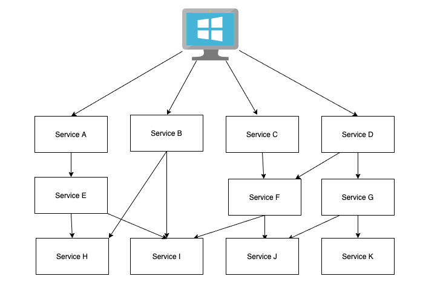

Created by Peter Gross, last modified on Sep 13, 2020
As I have been developing applications, I have followed a standard pattern of writing a ReactJS front end that ran in the browser and a NodeJS backend that stored all of the data in a single database.

This was ok for small developments, but as i said in the introduction it meant that any small change meant a complete deployment of the application, especially any database changes.
My first attempt at microservices was to split out all major functions into their own services, and even in a small application i quickly ended up with twenty services.

The major downsides of this approach was:
The services were not isolated from one another, and I occasionally broke a service I was not making a change for;
Going too early to small services resulted in a lot of design iterations, I should have written a lot more of the application first, then looked at breaking out services where they made sense;
Testing was more complex, and I ended up running a complete regression test on every pull request;
The approach to where data was stored was not obvious and I ended up using a central database again;
It got complex very fast, next time I would have to look at configuration management techniques at the start.
The good points:
Most of the good points were coming out of using Istio as a service Mesh:
Live deployments were easy;
Handling A/B deployments were easy;
The service mesh handled all failed calls for me and retried until the down service was back up;
Transaction throttling was handled by the service mesh.
All of these things were no longer available when using the Queue service. I will look into envoy and kafka integration in phase 3.
After watching the NR Tech Academy Introduction to Microservices and doing some reading on the Internet I decided to change my approach.
I would:
Create a service for each of the business functions I wanted to create, with the complete authorisation, routing, app logic and data required for that function to work without needing any other services;
These services would not talk directly with one another (which would introduce dependencies), instead they will communicate asynchronously through an event bus;
The services would have a REST API to allow the clients to consume their services;
Use Kubernetes to develop these services, so I could develop locally with confidence that it would deploy to the cloud easily
{kind=link}
{kind=link}
{kind=link}